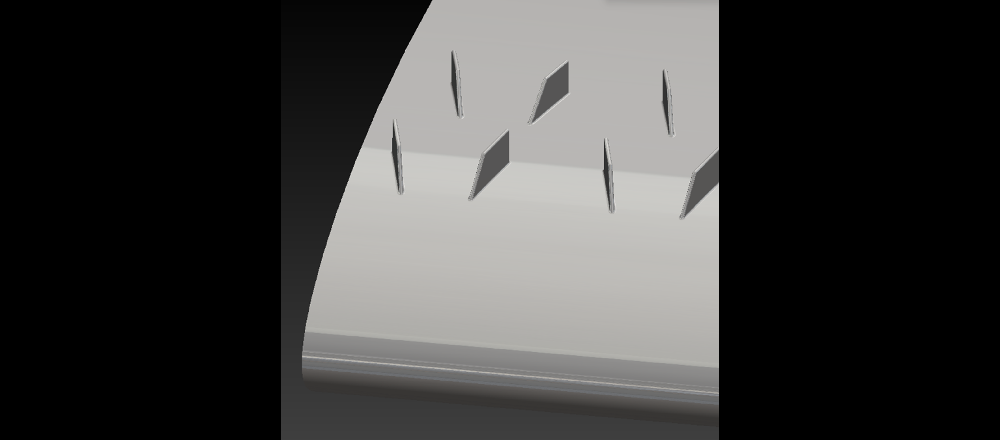
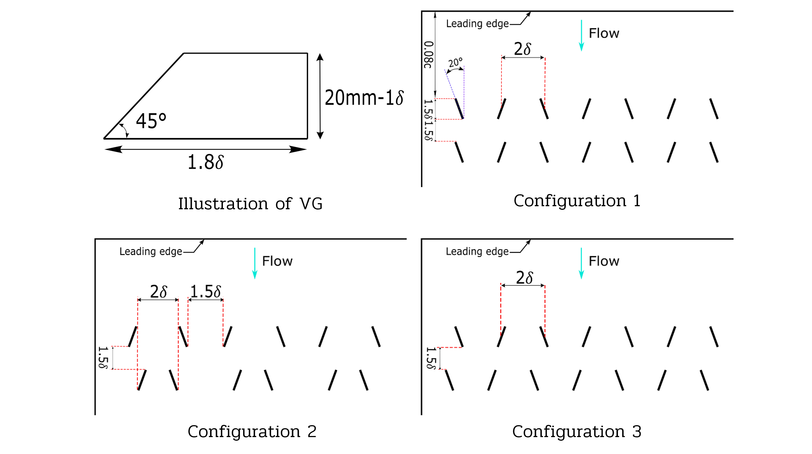
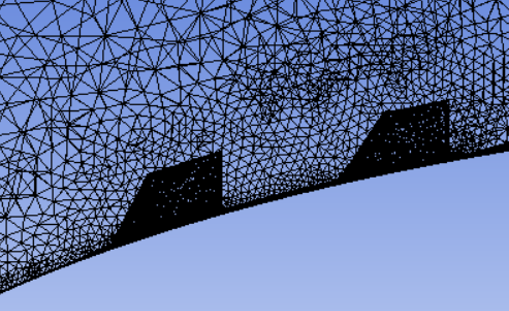
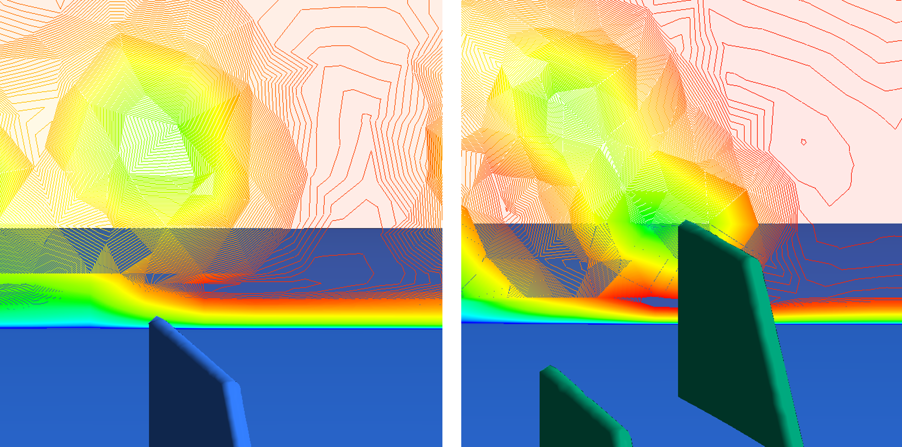
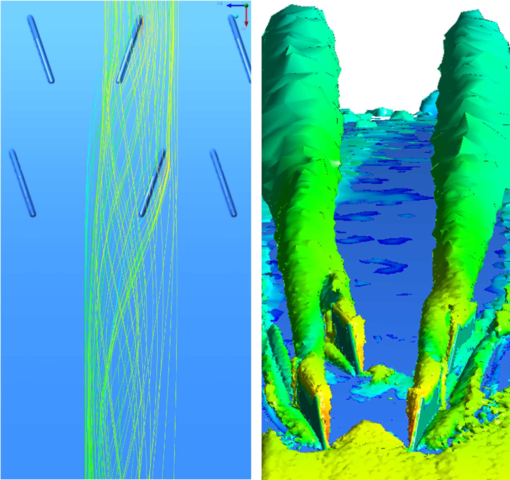

CAD setup of VGs

Illustration of configurations

Mesh corss section near VGs

Velocity contour behind 1. Single VG vs 2. DVGs

Streamlines and Vortex Core regions showing Vortex merger
Velocity contrours at different sections
Vortex Generators are used in various applications to delay stall and improve mixing. My hypothesis was that the vortices from consecutive Vortex Generators would merge to form a stronger one that would better carry momentum till the trailing edge, the region most susceptible to flow separation. Through CFD Simulations, I decided to test this out for different confiturations of Double row Vortex Generators (DVGs). The study aimed to quantify how strategically placed vortex generators could further delay flow separation and improve lift charactersitics through controlled vortex interaction, compared to the conventional single row VGs.
Published Research: "Numerical investigation of double row vortex generators on a wing" - AIP Conference Proceedings 2648, 020016 (2022)
doi.org/10.1063/5.0114097
doi.org/10.1063/5.0114097
Key Findings & Achievements:
- Successfully increased wing lift by 3.7% and improved overall lift-to-drag ratio by 6%
- Delayed stall angle by 3 degrees, significantly improving high-AOA performance
- Demonstrated vortex merging phenomenon creating stronger, more persistent vortices
- Published findings in AIP Conference Proceedings (DOI: 10.1063/5.0114097)
Technical Approach:
- Developed specialized mesh refinement strategy focusing on high velocity gradient regions behind VGs
- Implemented Lambda-Q criterion for precise vortex visualization and analysis
- Tested multiple configurations to optimize vortex generator spacing and alignment
- Analyzed complex interactions between vortices and boundary layer dynamics
Key Learnings:
- Advanced understanding of vortex dynamics and boundary layer interactions
- Developed expertise in strategic mesh refinement for complex flow features
- Gained practical experience in turbulence modeling and flow separation control
- Learned to optimize computational resources through efficient meshing techniques
CFD
Vortex Dynamics
Aerodynamics
ANSYS Fluent
Mesh Refinement
Flow Separation
Boundary Layer
Research Publication